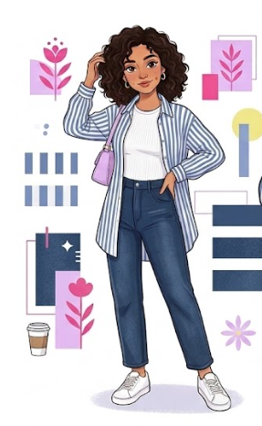

01

DISCOVER
THE CAPSULE
Introduce the campaign's philosophy: you don't need endless options to create variety.
“Less clothes. More combinations.”
JOB TO BE DONE
Establish the campaign thought.
PORTFOLIO CASE STUDY / 2026
Same wardrobe.
New plans.
A social-first fashion campaign concept designed to make everyday wardrobes feel more versatile, creative and fun for Indian college students.

STARTING POINT
Students can have a wardrobe full of familiar pieces and still feel like they have nothing new to wear.
The problem isn't necessarily a lack of clothes. It can be the feeling that the same pieces don't work for different plans, moods or occasions.
The opportunity was to create a campaign that makes the existing wardrobe feel more useful — without turning the message into another minimalist-fashion lecture.
THE EVERYDAY TENSION
THE REFRAME
When people can see more ways to use what they already own, the wardrobe starts feeling different.
THE CREATIVE RESPONSE
A minimalist wardrobe conversation focused primarily on reducing what people own.
Show how familiar pieces can become new outfits through styling, combinations and experimentation.
Your wardrobe isn't boring.
You just haven't experimented enough.
FROM IDEA → CONTENT
The campaign isn't designed as three disconnected posts. Each content idea has a different job in moving the audience through the campaign.
DISCOVER
Introduce the campaign's philosophy: you don't need endless options to create variety.
“Less clothes. More combinations.”
EXPERIMENT
Demonstrate the idea instead of simply talking about it. One familiar piece moves across different student plans.
Class → Café → College Event
ENGAGE
Turn inspiration into participation with interactive prompts that ask students to choose, remix and respond.
“Pick a look. Remix your wardrobe.”THE CONTENT JOURNEY
THE CONTENT SYSTEM
Each format plays a different role. The goal is to build a content ecosystem rather than repeat the same message in different templates.
Introduce the thought and make the problem relatable.
Demonstrate styling possibilities in motion.
Use polls, choices and prompts to create participation.
Encourage outfit remixes, responses and UGC.
Connect styling inspiration to product consideration.
STRATEGIC CHECK
Built around a real everyday tension students already recognise.
The content gives the audience something they can actually try.
Interactive formats turn styling from inspiration into action.
The framework can generate many variations beyond the initial campaign.
IF THIS WENT LIVE...
This is a concept project, so no performance results are fabricated. Instead, these are the signals I would use to evaluate the campaign.
Reach
Reel views
Profile visits
Saves
Shares
Comments
Story interactions
Profile clicks
Product clicks
Content journeys
UGC
Outfit remixes
Repeat participation
FINAL THOUGHT